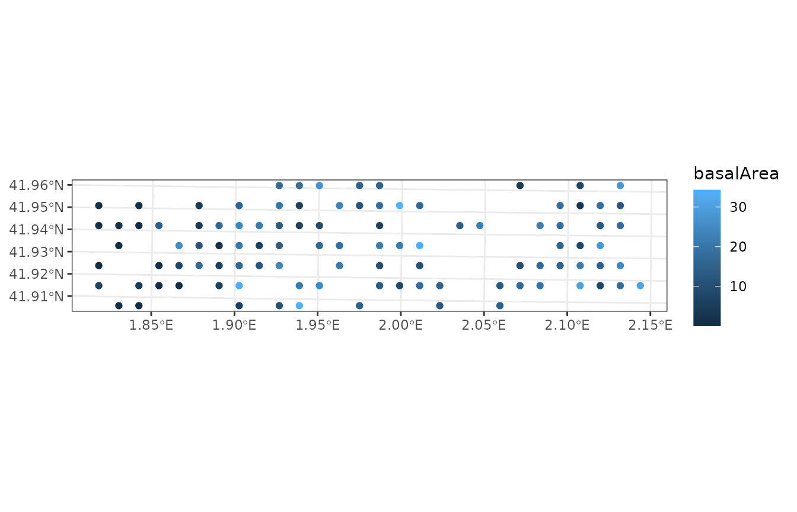
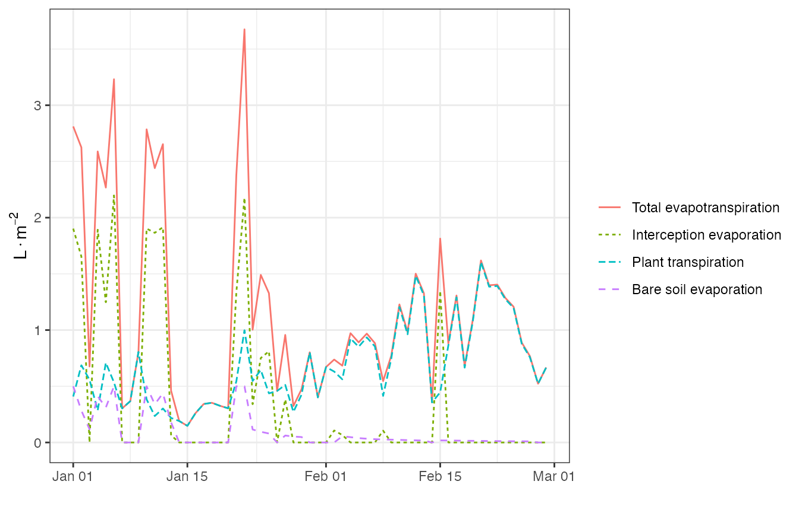
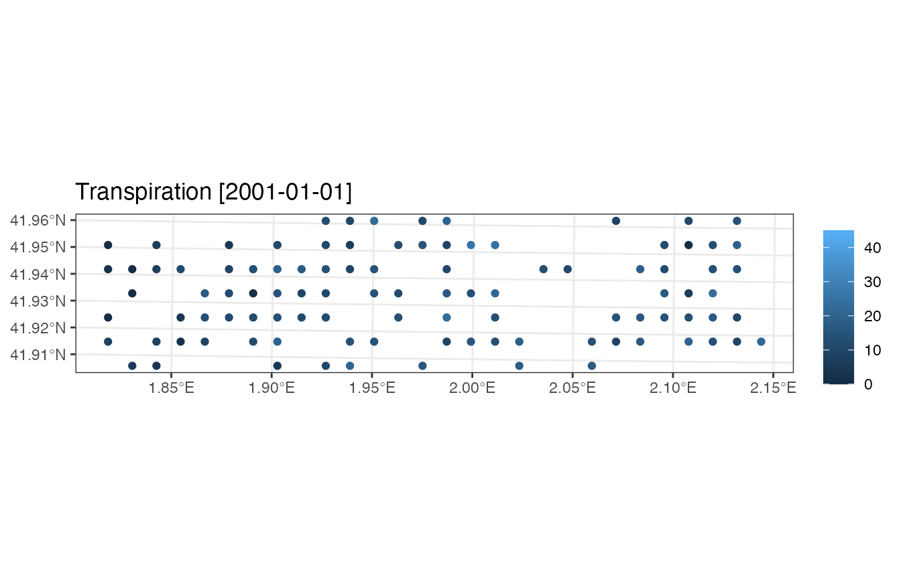
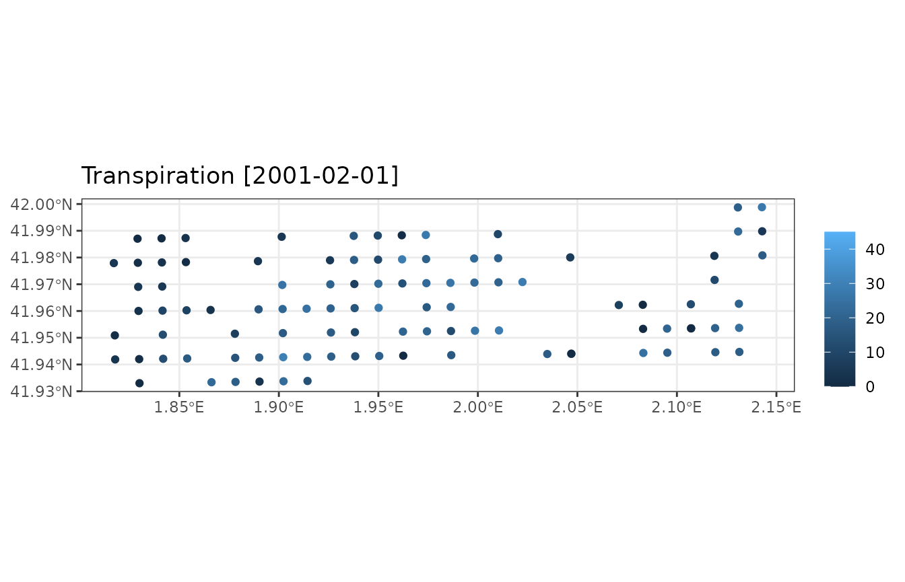
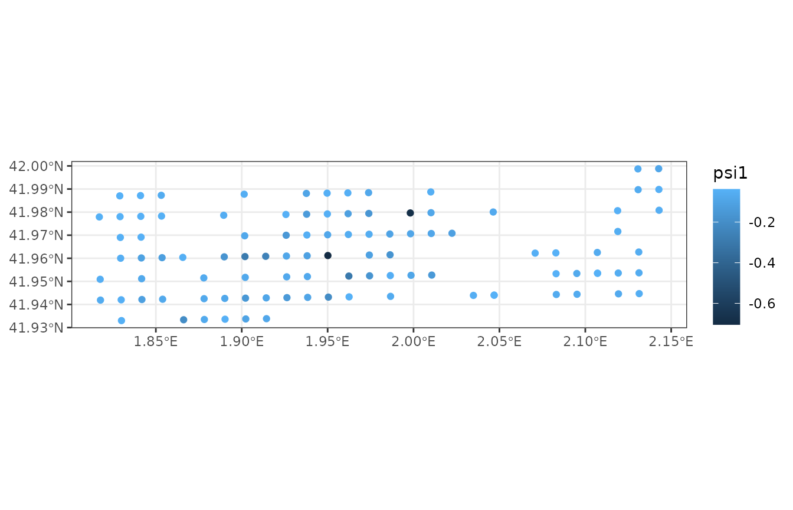
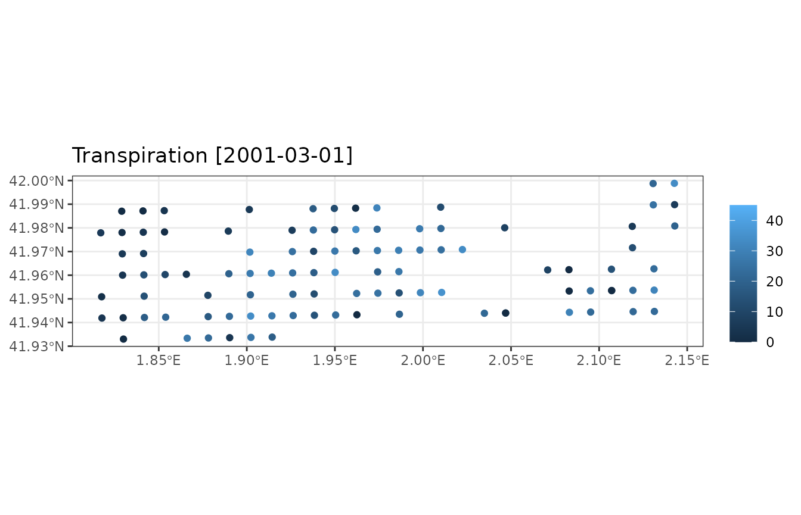
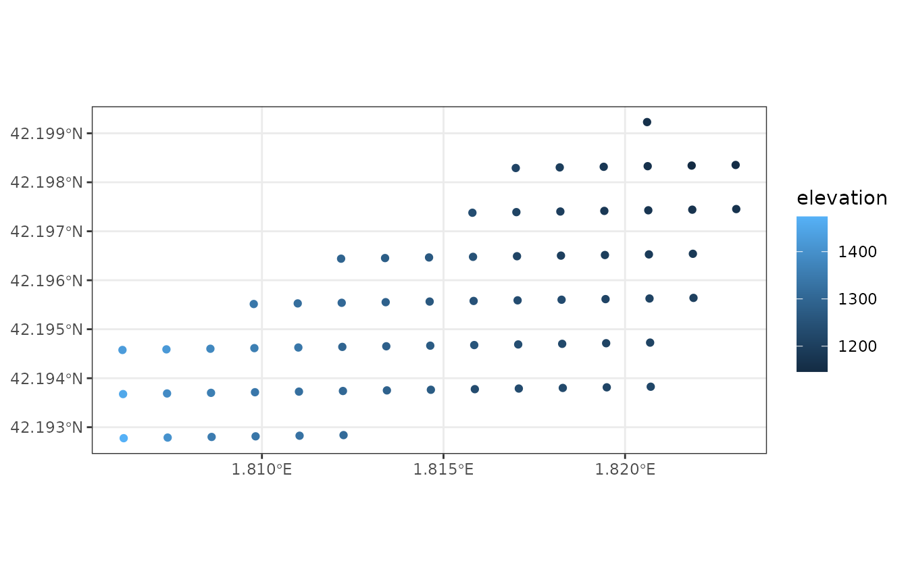
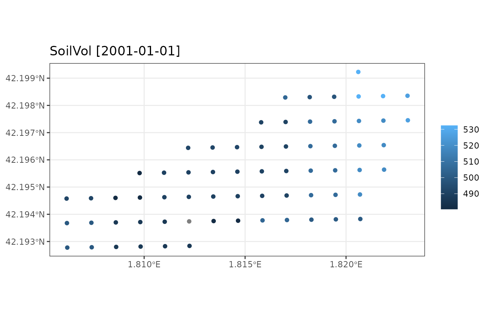

LandscapeWaterBalance.RmdWe begin by loading an example dataset of 100 forest stands distributed on points in the landscape:
data("example_ifn")
example_ifn## Simple feature collection with 100 features and 7 fields
## Geometry type: POINT
## Dimension: XY
## Bounding box: xmin: 1.817095 ymin: 41.93301 xmax: 2.142956 ymax: 41.99881
## Geodetic CRS: WGS 84
## # A tibble: 100 × 8
## geom id elevation slope aspect land_cover_type soil
## * <POINT [°]> <chr> <dbl> <dbl> <dbl> <chr> <list>
## 1 (2.130641 41.99872) 081015_A1 680 7.73 281. wildland <df>
## 2 (2.142714 41.99881) 081016_A1 736 15.6 212. wildland <df>
## 3 (1.828998 41.98704) 081018_A1 532 17.6 291. wildland <df>
## 4 (1.841068 41.98716) 081019_A1 581 4.79 174. wildland <df>
## 5 (1.853138 41.98728) 081020_A1 613 4.76 36.9 wildland <df>
## 6 (1.901418 41.98775) 081021_A1 617 10.6 253. wildland <df>
## 7 (1.937629 41.98809) 081022_A1 622 20.6 360 wildland <df>
## 8 (1.949699 41.9882) 081023_A1 687 14.4 324. wildland <df>
## 9 (1.96177 41.98831) 081024_A1 597 11.8 16.3 wildland <df>
## 10 (1.97384 41.98842) 081025_A1 577 14.6 348. wildland <df>
## # ℹ 90 more rows
## # ℹ 1 more variable: forest <list>Using plot_variable() functions for spatial landscape
objects, we can draw maps of some variables using:
plot_variable(example_ifn, "basal_area")
The set of maps available can be known by inspecting the help of
function extract_variables(). Alternatively, the package
provides function shinyplot_land() to display maps
interactively.
Package medfate includes functions spwb(),
growth() and fordyn() to simulate soil water
balance, carbon balance and forest dynamics on a single forest stand,
respectively. This section describe how to run simulations on a set of
forest stands in one call. This is done using functions
spwb_spatial(), growth_spatial() and
fordyn_spatial(), respectively.
As an example, we will use function spwb_spatial(),
which simulates soil plant water balance on forests distributed in
particular locations. The function takes an object of class
sf as input.
As before, we need meteorological data, species parameters and control parameters for local simulations (which will apply to all forest stands):
The call to spwb_spatial() can be done as follows (here
we restrict the dates for simplicity):
dates <- seq(as.Date("2001-01-01"), as.Date("2001-02-28"), by="day")
res <- spwb_spatial(example_ifn, SpParamsMED, examplemeteo,
dates = dates, local_control = local_control, progress = FALSE)Function spwb_spatial() first initializes model inputs
by calling forest2spwbInput() for each forest stand
described in the sf landscape object. Then it calls
function spwb() for each forest stand and stores the
result. The fact that we used examplemeteo as
meteorological input involves that the same weather was applied to all
forest stands, but different weather could have been specified for each
one (see documentation of function spwb_spatial()).
The result of calling spwb_spatial() is an object of
class sf with the following columns:
names(res)## [1] "geometry" "id" "state" "result"Column geometry contains the geometry given as input to
simulations, column id contains the identification label of
each stand, column state contains the
spwbInput corresponding to each forest stand (which can be
used in subsequent simulations) and column result contains
the output of spwb() function for each forest stand
(i.e. its elements are objects of the S3 class spwb).
The structure of the output of spwb_spatial() allows
querying information for the simulation of any particular forest stand.
For example, we may use function plot.spwb(), from package
medfate, to display the simulation results on a
particular plot:
plot(res$result[[1]], "Evapotranspiration")
Similarly, if we want a monthly summary of water balance for the
first stand, we can use function summary.spwb() from
package medfate:
summary(res$result[[1]], freq="months",FUN=sum, output="WaterBalance")## PET Precipitation Rain Snow NetRain Snowmelt
## 2001-01-01 44.61337 74.74949 58.098839 16.650650 40.577210 13.093006
## 2001-02-01 84.65954 4.99943 2.457859 2.541571 0.949663 5.552842
## Infiltration Runoff DeepDrainage Evapotranspiration Interception
## 2001-01-01 53.670216 0 41.51343 32.90625 17.521628
## 2001-02-01 6.502505 0 0.00000 21.26908 1.508196
## SoilEvaporation HerbTranspiration PlantExtraction Transpiration
## 2001-01-01 5.734258 0 9.650366 9.650366
## 2001-02-01 1.494367 0 18.266522 18.266522
## HydraulicRedistribution
## 2001-01-01 0.01084816
## 2001-02-01 0.02564369However, a more convenient way of generating summaries is by
calculating them on all forest stands in one step, using function
simulation_summary() on objects issued from
simulations:
res_sum <- simulation_summary(res, summary_function = summary.spwb,
freq="months", output="WaterBalance")where the argument summary_function points to the
function to be used to generate local summaries and the remaining
arguments are those of the local summary function. The result of using
simulation_summary() is again an object of class
sf that contains the spatial geometry and the list of
summaries for all stands:
names(res_sum)## [1] "geometry" "id" "summary"The summary for the first stand can now be accessed through the first
element of column summary:
res_sum$summary[[1]]## PET Precipitation Rain Snow NetRain Snowmelt
## 2001-01-01 44.61337 74.74949 58.098839 16.650650 40.577210 13.093006
## 2001-02-01 84.65954 4.99943 2.457859 2.541571 0.949663 5.552842
## Infiltration Runoff DeepDrainage Evapotranspiration Interception
## 2001-01-01 53.670216 0 41.51343 32.90625 17.521628
## 2001-02-01 6.502505 0 0.00000 21.26908 1.508196
## SoilEvaporation HerbTranspiration PlantExtraction Transpiration
## 2001-01-01 5.734258 0 9.650366 9.650366
## 2001-02-01 1.494367 0 18.266522 18.266522
## HydraulicRedistribution
## 2001-01-01 0.01084816
## 2001-02-01 0.02564369Summary objects are handy because their plot_summary()
function allows us to display maps of summaries for specific dates:
plot_summary(res_sum, "Transpiration", "2001-01-01", limits=c(0,45))
plot_summary(res_sum, "Transpiration", "2001-02-01", limits=c(0,45))
To avoid displaying maps one by one, the package includes function
shinyplot_land() that allows displaying maps of temporal
summaries interactively.
If one needs to save memory, it is possible with
spwb_spatial() to generate temporal summaries automatically
after the simulation of soil water balance of each stand, and storing
those summaries instead of all the output of function
spwb().
For example the following code will keep temporal summaries of water balance components instead of simulation results:
res_2 <- spwb_spatial(example_ifn, SpParamsMED, examplemeteo,
dates = dates, local_control = local_control,
keep_results = FALSE, progress = FALSE,
summary_function = summary.spwb, summary_arguments = list(freq="months"))Parameter keep_results = FALSE tells
spwb_spatial() not to keep the simulation results of forest
stands, whereas summary_function = summary.spwb tells
spwb_spatial() to perform and store summaries before
discarding the results of any stand. The output has slightly different
column names:
names(res_2)## [1] "geometry" "id" "state" "result" "summary"In particular, result is not included. Now the temporal
summaries can be directly accessed through the column
summary:
res_2$summary[[1]]## PET Precipitation Rain Snow NetRain Snowmelt
## 2001-01-01 44.61337 74.74949 58.098839 16.650650 40.577210 13.093006
## 2001-02-01 84.65954 4.99943 2.457859 2.541571 0.949663 5.552842
## Infiltration Runoff DeepDrainage Evapotranspiration Interception
## 2001-01-01 53.670216 0 41.51343 32.90625 17.521628
## 2001-02-01 6.502505 0 0.00000 21.26908 1.508196
## SoilEvaporation HerbTranspiration PlantExtraction Transpiration
## 2001-01-01 5.734258 0 9.650366 9.650366
## 2001-02-01 1.494367 0 18.266522 18.266522
## HydraulicRedistribution
## 2001-01-01 0.01084816
## 2001-02-01 0.02564369And one can produce maps with summary results directly from the output of the simulation function:
plot_summary(res_2, "Transpiration", "2001-02-01", limits=c(0,45))The possibility of running a summary function after the simulation of
each stand is not limited to summary.spwb(). Users can
define their own summary functions, provided the first argument is
object, which will contain the result of the simulation
(i.e., the result of calling spwb(), growth()
or fordyn()). For example, the following function calls
droughtStress():
f_stress <- function(object, ...) {
return(droughtStress(object, ..., draw = FALSE))
}Now we can call again spwb_spatial:
# res_3 <- spwb_spatial(example_ifn, SpParamsMED, examplemeteo,
# dates = dates, local_control = local_control,
# keep_results = FALSE, progress = FALSE,
# summary_function = f_stress,
# summary_arguments = list(index = "ADS", freq = "months", bySpecies=TRUE))The drought stress summary of stand #1 is:
# res_3$summary[[1]]And we can draw a map with the monthly drought stress of Quercus ilex across space using:
# plot_summary(res_3, "Quercus ilex", "2001-02-01")The result of a simulation includes an element state,
which stores the state of soil and stand variables at the end of the
simulation. This information can be used to perform a new simulation
from the point where the first one ended. In order to do so, we need to
update the state variables in spatial object with their values at the
end of the simulation, using function
update_landscape():
example_ifn_mod <- update_landscape(example_ifn, res)The resulting object w is the same as y
except for the state variables. For example we can compare the water
potential in the first soil layer:
# plot_variable(example_ifn, "psi1")
plot_variable(example_ifn_mod, "psi1")
By using w as input we can now simulate water balance in
the set of stands for an extra month:
dates <- seq(as.Date("2001-03-01"), as.Date("2001-03-31"), by="day")
res_3 <- spwb_spatial(example_ifn_mod, SpParamsMED, examplemeteo,
dates = dates, local_control = local_control,
summary_function = summary.spwb, summary_arguments = list(freq = "months"),
progress = FALSE)And display a map with the resulting month transpiration:
plot_summary(res_3, "Transpiration", "2001-03-01", limits=c(0,45))
Simulation of watershed hydrology involves describing a watershed in a gridded mode and simulating soil water balance water while including additional compartments and hydrological processes, such as routing runoff from one cell to the other.
To illustrate this kind of simulation, which is carried out using
function spwb_land(), we first load a small example
watershed included with the package:
data("example_watershed")
example_watershed## Simple feature collection with 66 features and 19 fields
## Geometry type: POINT
## Dimension: XY
## Bounding box: xmin: 1.806159 ymin: 42.19278 xmax: 1.823062 ymax: 42.19923
## Geodetic CRS: WGS 84
## # A tibble: 66 × 20
## geometry id elevation slope aspect land_cover_type
## * <POINT [°]> <int> <dbl> <dbl> <dbl> <chr>
## 1 (1.820606 42.19923) 1 1162 11.3 79.2 wildland
## 2 (1.81699 42.19829) 2 1214 12.4 98.7 agriculture
## 3 (1.818201 42.1983) 3 1197 10.4 102. wildland
## 4 (1.819412 42.19832) 4 1180 8.12 83.3 wildland
## 5 (1.820623 42.19833) 5 1164 13.9 96.8 wildland
## 6 (1.821834 42.19834) 6 1146 11.2 8.47 agriculture
## 7 (1.823045 42.19835) 7 1153 9.26 356. agriculture
## 8 (1.815796 42.19738) 8 1237 14.5 75.1 wildland
## 9 (1.817007 42.19739) 9 1213 13.2 78.7 wildland
## 10 (1.818218 42.1974) 10 1198 8.56 75.6 agriculture
## # ℹ 56 more rows
## # ℹ 14 more variables: forest <list>, soil <list>, state <list>,
## # waterOrder <int>, waterQ <list>, queenNeigh <list>, channel <lgl>,
## # depth_to_bedrock <dbl>, bedrock_conductivity <dbl>, bedrock_porosity <dbl>,
## # snowpack <dbl>, aquifer <dbl>, represented_area <dbl>, crop_factor <dbl>Here is a map of elevation values:
plot_variable(example_watershed, "elevation")
Since the landscape contains agricultural lands, we need to define crop factors, which will determine transpiration flow as a proportion of potential evapotranspiration:
example_watershed$crop_factor = NA
example_watershed$crop_factor[example_watershed$land_cover_type=="agriculture"] = 0.75As for the call to function spwb_spatial() we will use
the same weather (i.e. examplemeteo) across the watershed.
To speed up calculations we call function spwb_land() for a
single month.
dates <- seq(as.Date("2001-01-01"), as.Date("2001-01-31"), by="day")
res_ws <- spwb_land(example_watershed, SpParamsMED, examplemeteo, dates = dates, summary_frequency = "month")## ## ── Simulation of model 'spwb' over a watershed ─────────────────────────────────## • Grid cells: 66, patchsize: 10000 m2, area: 66 ha## • Cell land use wildland: 48 agriculture: 17 artificial: 0 rock: 1 water: 0## • Cells with soil: 65## • Number of days to simulate: 31## • Number of summaries: 1## • Number of outlet cells: 1## ℹ Checking topology## ✔ Checking topology [7ms]## ## ℹ Checking spwb input## ✔ Checking spwb input [444ms]## ## ℹ 65 cells needed initialization## ✔ 65 cells needed initialization [20ms]## ## Daily simulations ■■■■■■■■■ 26% | ETA: 3s## Daily simulations ■■■■■■■■■■■■■■■■■■■■■■■■■■■■ 90% | ETA: 0s## Daily simulations ■■■■■■■■■■■■■■■■■■■■■■■■■■■■■■■ 100% | ETA: 0s## • Water balance check## Change in snowpack water content (mm): 0.05
## Snowpack water balance result (mm): 3.34
## Snowpack water balance components:
## Snow fall (mm) 16.65 Snow melt (mm) 13.31
##
## Change in soil water content (mm): 0
## Soil water balance result (mm): -11.47
## Soil water balance components:
## Net rainfall (mm) 33.66 Snow melt (mm) 13.31
## Runon (mm) 1.1 Runoff (mm) 0
## Subsurface input (mm) 0 Subsurface output (mm) 0
## Deep drainage (mm) 48.74 Aquifer discharge (mm) 0
## Soil evaporation (mm) 5.36 Plant transpiration (mm) 5.44
##
## Change in aquifer water content (mm): 48
## Aquifer water balance result (mm): 48
## Aquifer water balance components:
## Deep drainage (mm) 48 Aquifer discharge (mm) 0
##
## Change in watershed water content (mm): 0
## Watershed water balance result (mm): 40.05
## Watershed water balance components:
## Precipitation (mm) 74.75
## Interception (mm) 24.06 Soil evaporation (mm) 5.28 Plant Transpiration (mm) 5.35
## Export (mm) 0
## Watershed lateral flows:
## Subsurface flow (mm) 0
## Groundwater flow (mm) 9.26## • DoneAlthough simulations are performed using daily temporal steps,
parameter summary_frequency allows storing results at
coarser temporal scales, to reduce the amount of memory in spatial
results.
Unlike spwb_spatial() where summaries could be
arbitrarily generated a posteriori from simulation results,
with spwb_land() the summaries are always fixed and
embedded with the simulation result. For example, we can inspect the
summaries for a given landscape cell using:
res_ws$sf$summary[[1]]## MinTemperature MaxTemperature PET Runon Runoff Infiltration
## 2001-01-01 -3.203556 2.427977 44.91317 0 0 53.67129
## Rain NetRain Snow Snowmelt Interception DeepDrainage
## 2001-01-01 58.09884 40.57828 16.65065 13.09301 17.52056 41.84602
## AquiferDischarge SaturationExcess SoilEvaporation Transpiration SWE
## 2001-01-01 0 0 5.636713 9.715284 0
## SoilVol Psi1 WTD DTA InterflowInput InterflowOutput
## 2001-01-01 532.3416 -0.03300001 4000 15.02995 0 0
## BaseflowInput BaseflowOutput
## 2001-01-01 6.812457 1.45737Several plots can be drawn from the result of function
spwb_land() in a similar way as done for
spwb_spatial(). As an example we display a map of soil
water volume for the simulated month:
plot_summary(res_ws$sf, "SoilVol", "2001-01-01")